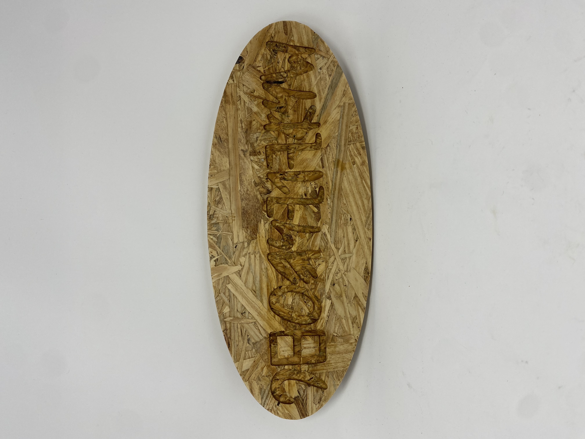
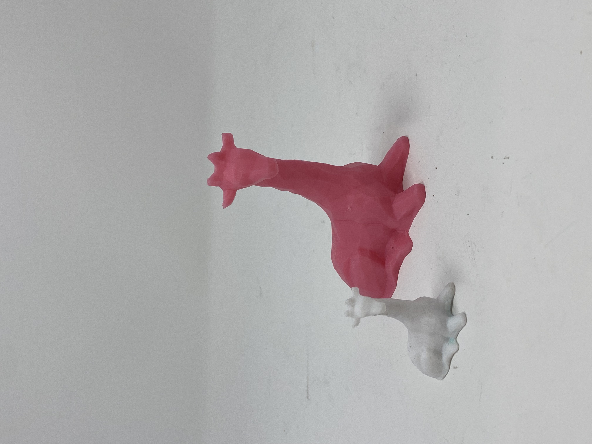
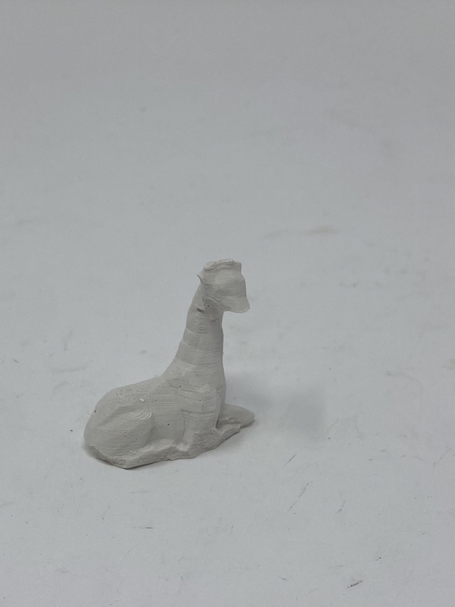

<h1 style= "text-align: center;">
Week 8: CNC Milling </b></h1>
This weeks assignment is to (1) design something and make it using CNC and (2) post-process my design using fabrication processes such as molding and casting, vacuum forming, or composites.
I decided to do two separate projects for this weeks assignment. For the ShopBot part, I'm going to make a sign for my roommates and for the molding and casting part, I'll be making a birthday present for my friend (who really likes giraffes).
<h2 style= "text-align: center;">
Part 1: ShopBot </b></h2>
Background: My blocking group name is "Phoenicians" and I recently learned that the Phoenicians best known legacy is having the world's oldest verified alphabet. Therefore, I decided that making a sign that says "Phoenicians" in the Phoenician alphabet would be a great gift for my blocking group that we could hang up on a wall.
I used GoodNotes to draw out my design and then Illustrator to trace over it and convert it into a DXF file. Then I used the ShopBot to cut out my design on a piece of wood. I sanded it and used a wood stain to go over the letters so they would be more visible.
Here's what my final product looks like (although I may try to stain the wood more):
<div class="image-container" style="margin-bottom: 20px; ; text-align: center;">

</div>
<h2 style= "text-align: center;">
Part 2: Molding and Casting </b></h2>
For molding and casting this week, I thought it'd be really fun to use this week and make my friend a birthday present. My friend Ari really likes giraffes so I decided to try and make a bunch of tiny giraffes and hide them around her room.
I started by finding a giraffee on <a href="https://www.thingiverse.com/">thingiverse</a> and 3D printing it. It turns out the first print was too big so I scaled it down 50% and re-printed it.
Here's my two giraffes:
<div class="image-container" style="margin-bottom: 20px; ; text-align: center;">

</div>
Molding and casting the small giraffe was a lot harder than I anticipated. The giraffe wouldn't stay still and kept floating up through the mold mixture, even after I hot glued and taped it down. I ended up hot gluing it upside down to a piece of wood and had it hanging in the mixture.
After creating a mold, I attempted to make a plaster giraffe. It came out okay but then as I was trying to clean up the edges, I broke it's foot. Here's my broken giraffe:
<div class="image-container" style="margin-bottom: 20px; ; text-align: center;">

</div>